.
Podstawy dla początkujących
12-02-2021
|
Wstęp Jak działają filtry optyczne astronomiczne? Co się dzieje za ich przyczyną? Który filtr, jaki daje efekt...? Ktoś... kiedyś... zapytał, czy warto do filtra Ha (h-alpha) dodać filtr UHC, czy to coś poprawi, bo jak wiadomo, filtr UHC wycina szkodliwe LP (Light Polution - światła miasta). Poniższe opracowanie ma na celu wyposażyć początkujących w wiedzę gwarantującą naturalną znajomość odpowiedzi na powyższe pytanie. . Nie będziemy zgłębiać fizyki zagadnienia, skupimy się jedynie na praktycznych aspektach tematu. . Wiedza w miarę możliwości będzie stopniowana w stosownej kolejności, powoli wtajemniczając Was w kolejne zagadnienia. Opracowanie podzieliłem na kilka działów, kliknij stosowną nazwę, aby zostać przeniesionym do interesującej Cię sekcji. ➤ ŚWIATŁO - WIDMO ŚWIATŁA ➤ FILTRY - EFEKT ZASTOSOWANIA FILTRÓW ➤ SPRAWNOŚĆ FILTRÓW ➤ SPRAWNOŚĆ FILTRA A SPRAWNOŚĆ MATRYCY ➤ nm - CZYLI NANOMETRY ➤ SZEROKOŚĆ FILTRA ➤ 3nm - 7nm - 12nm - 35nm | KTÓRY LEPSZY? ➤ STROMOŚĆ ZBOCZY - OBRAZ WIDMA ➤ PODSTAWOWE RODZAJE FILTRÓW ➤ KOLOR PASMA OIII ➤ SAMODZIELNE BADANIE FILTRÓW ➤ RODZAJE FILTRÓW Z UWAGI NA KONSTRUKCJĘ ➤ DŁUGOŚĆ FALI A ROZDZIELCZOŚĆ ➤ BLUESHIFT ❚ ŚWIATŁO - WIDMO ŚWIATŁA Światło białe tak naprawdę składa się z widma barw podstawowych takich jak: fiolet - niebieski - zielony - żółty - pomarańczowy - czerwony. Z lewej strony widma, na lewo od fioletu, znajduje się ultrafiolet (UV - Ultraviolet), a z prawej strony widma, na prawo od czerwieni, znajduje się podczerwień (IR - Infrared). Dla ludzkiego oka dostępny jest zakres od fioletu do czerwieni, jednak dla kamer astrofotograficznych dostrzegalne są także ultrafiolet - UV, oraz podczerwień - IR. Zadaniem stosowanych przez nas filtrów jest wyselekcjonowanie i przepuszczenie konkretnego wycinka widma światła. Nadto, jak widzicie poniżej, oznaczyłem w widmie miejsce występowania dwóch kluczowych dla astrofotografii pasm, mianowicie, tlen - OIII (czyt. O3), oraz wodór - Ha (czyt. ha alfa). 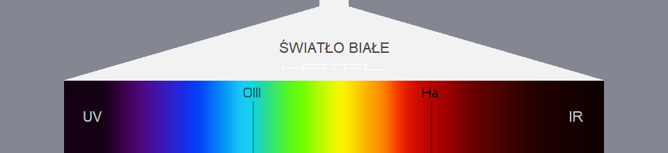
Bez żadnej przeszkody po drodze (jak widać poniżej) do naszej matrycy/sensora kamerki dotrze pełne widmo światła, od UV, przez całe widmo widzialne, wraz z IR. 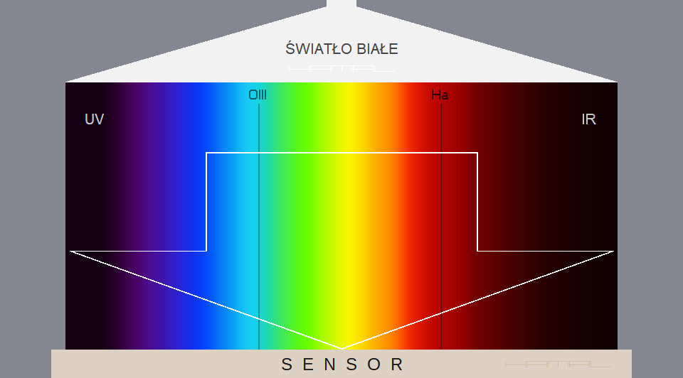
Dla uproszczenia w dalszej części opisu będziemy posługiwać się poniższym obrazkiem. BEZ FILTRA 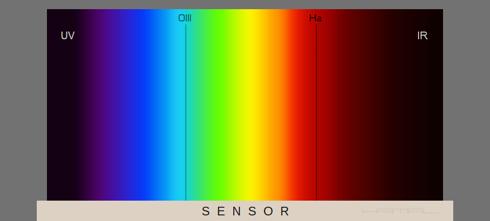 WRÓĆ DO WYKAZU DZIAŁÓW ➤ ❚ FILTRY - EFEKT ZASTOSOWANIA FILTRÓW Filtry są niczym zapory dla danych zakresów widma światła, aby wiedzieć, który zakres widma dany filtr nam zablokuje, a który przepuści, należy zapoznać się z opisem producenta. Bardzo dobre rozwiązanie przyjęła firma Baader, która na każdym opakowaniu filtra umieszcza obrazek pełnego widma światła, a nad nim przepuszczany przez dany filtr zakres widma. Dla przykładu filtr czerwony PUDEŁKO - WIDMO Najbardziej podstawowym filtrem i pewnie pierwszym, z jakim w astrofotografii się spotkacie, jest tzw. filtr L, czyli luminancji, lub też inaczej zwany UV-IR-cut, czyli filtr przepuszczający widmo widzialne, a wycinający promieniowanie ultrafioletowe (UV) i podczerwone (IR), gdyż te, jako takie, w astrofotografii kolorowej RGB i OSC są zbędne, a wręcz szkodliwe dla odwzorowania kolorów. Poniższy obrazek przedstawia sytuację, gdy zastosujemy filtr L UV-IR-cut. Filtr dzięki swojej budowie z widma światła wyciął UV (na lewo) oraz IR (na prawo), do matrycy przechodzi widzialne spektrum światła, od fioletu, przez niebieski, turkus, zieleń, żółć, pomarańcz, po czerwień. Tak działa filtr L (IR-UV cut). L (IR-UV cut)
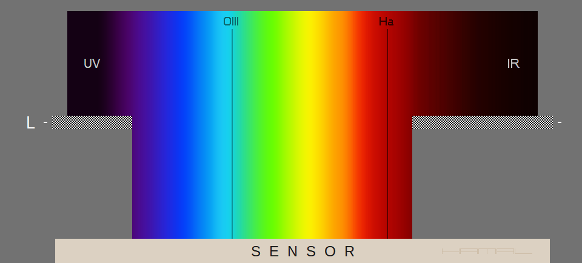 Powyższy filtr nie znajduje zastosowania w obserwacjach wizualnych, z uwagi na fakt, iż oko ludzkie nie jest czułe ani na UV, ani na IR, więc to, co on wycina, w obserwacjach wizualnych nie ma wpływu na obserwowany obraz. Stosujemy go w astrofotografii. Innym popularnym filtrem w astronomii, już także obserwacyjnej, jest filtr wycinający LP (Light Pollution - światła miast, lamp ulicznych itp.) Szczęśliwie się składa, że istnieje pewien konkretny rejon widma światła, w którym skupia się sporo zanieczyszczenia światłem miejskim, a przy tym, nie jest on kluczowy dla fotografowanych pasm. Filtr taki, u jednych producentów nazywa się UHC, u innych CLS lub jeszcze inaczej, tak czy inaczej jego zadaniem jest wyciąć zakres widma światła, w którym skupia się najwięcej szkodliwego zakresu światła (oznaczony na biało sektor LP). Zauważcie, że filtr ten wyciął LP, ale pozostawił obszary z bezcennymi pasmami, czyli OIII, oraz Ha, takie jego zadanie. Przy okazji wyciął też UV i IR, abyśmy nie musieli do niego dodawać filtra L UV-IR-cut. UHC
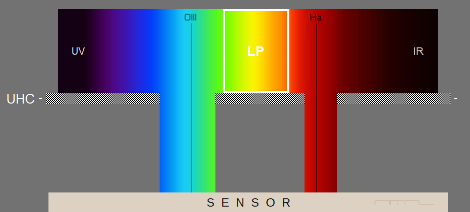 Skoro już o pasmach OIII i Ha mowa, dla przykładu sprawdźmy, co z naszego pełnego widma światła przepuści wąskopasmowy filtr OIII. O III
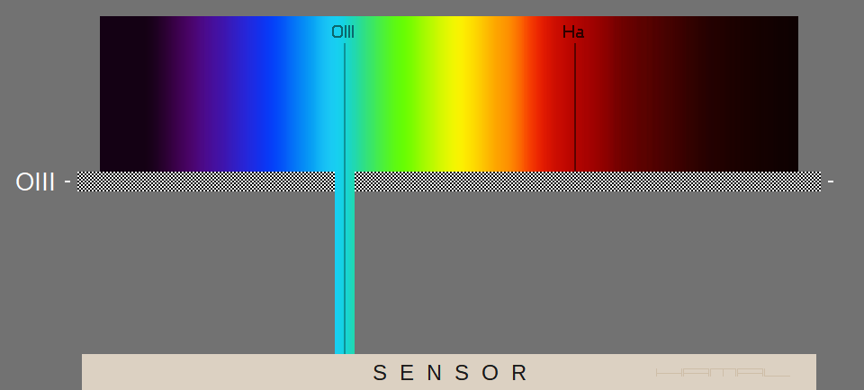 Jak widzimy, filtr OIII przepuścił nam bardzo wąski zakres widma wraz z pasmem OIII. Dla odmiany sprawdźmy wąskopasmowy filtr Ha. Ha
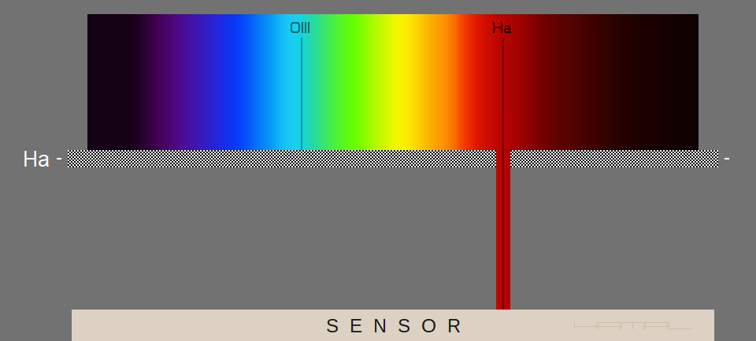 Jak widzimy, filtr Ha przepuścił nam bardzo wąski zakres widma wraz z pasmem Ha. Wróćmy zatem do postawionego na wstępie pytania, czy warto do filtra Ha dołożyć filtr UHC, czy to coś poprawi, bo jak wiadomo, filtr UHC wycina szkodliwe LP (Light Polution - światła miasta) Przeprowadźmy więc taką wizualizację, prezentując filtr Ha i dodany do niego filtr UHC. Ha + UHC
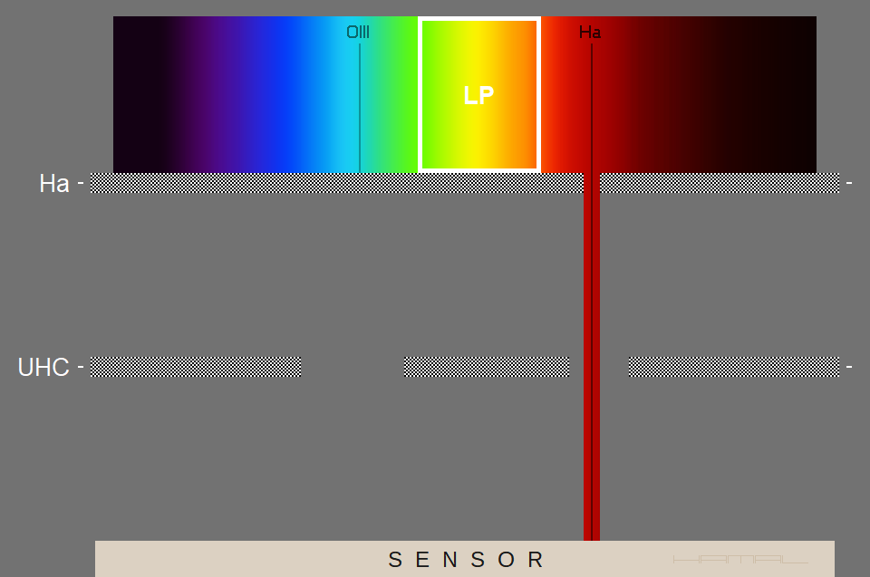 Co powiecie? Czy filtr UHC wnosi coś nowego do układu? Patrz poniżej. Przez szerokie wrota filtra UHC w obrębie czerwieni (1) przechodzi w pierwotnej formie, przycięta przez wąskopasmowy filtr Ha (2) wąska stróżka Ha, a przepustowość filtra UHC w obrębie zieleni i niebieskiego (3) nudzi się bezczynnie, nie mając czego filtrować, gdyż po wąskopasmowym filtrze Ha, tam po prostu już nic nie zostało, gdyż on nic nie przepuścił. Podobnie ma się sytuacja z LP, gdyż filtry wąskopasmowe typu Ha, OIII, SII, wycinają znaczną większość widma światła, w tym także LP, więc zapora w filtrze UHC (4), po tym, co dokonał filtr Ha, stoi bezczynnie. . Podsumowując, odpowiadając na postawione pytanie, stwierdzamy, iż nie ma sensu do filtra Ha dokładać filtra UHC, gdyż ten nic nowego nam nie wniesie. Ha + UHC
Dla odmiany przeprowadźmy odwrotną próbę, mając już zamontowany w teleskopie filrt UHC, dodajny do niego filtr Ha. Jak widzimy, filtr Ha zmodyfikował to, co przepuścił filtr UHC, blokując pasmo OIII wraz z otoczeniem (1), oraz zawężając nam widmo w obrębie Ha (2). UHC + Ha
 Innym etapem wtajemniczenia, w zakresie przycinania pasma przez filtry, jest uzyskanie pożądanej części wspólnej. Zaraz zobaczycie, o co chodzi :) Jest sobie niebieski filtr Baader, tzw. B (od Blue), w zestawu RGB. B
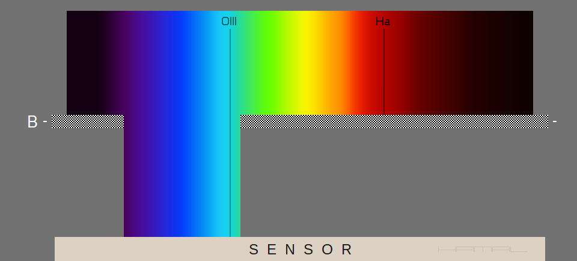 Jest sobie zielony filtr Baader, tzw. G (od Green), z zestawu RGB. G
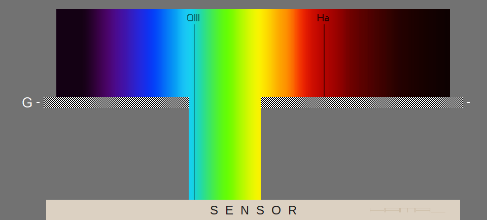 A teraz zobaczmy, co się stanie, gdy połączymy oba te filtry ze sobą. B + G
Filtr B przyciął widmo zgodnie ze swoją charakterystyką, ustalając skrajne położenie części wspólnej z prawej strony, filtr G dociął widmo z lewej strony, w ten sposób drożna pozostała jedynie ich część wspólna, i faktycznie, zgodnie z deklaracją producenta, z połączenia filtrów B i G, powstał nam filtr OIII. B + G
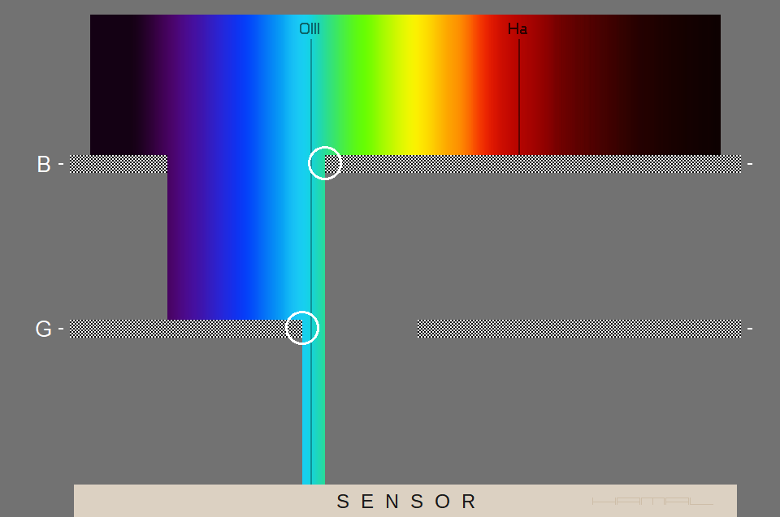 Dla porównania umieściłem poniżej klasyczny filtr wąskopasmowy OIII, efekt końcowy praktycznie ten sam, można więc posiadając filtry G i B, z powodzeniem symulować i stosować filtr Narrowband OIII. OIII
W podobny sposób utworzyłem mój nietypowy filtr F550M, patrz TUTAJ Skoro można łączyć filtry ze sobą, to może się uda, dodać do siebie ich zakresy pracy? Idąc tym tropem...zapanowała obecnie moda na Dual-band Filter, który jest połączeniem wąskopasmowego filtra Ha i OIII... Dual-band Filter OIII i Ha
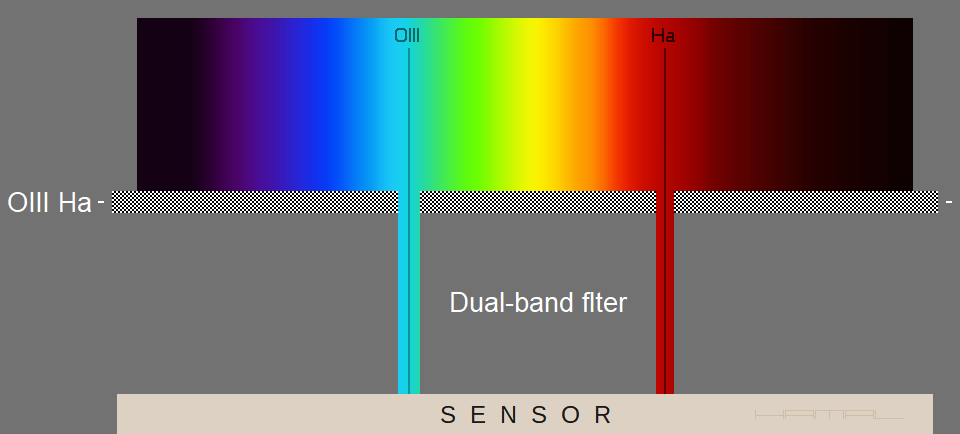 ...zachodzi więc pokusa oszczędzenia pieniędzy i połączenia samodzielnie posiadanych dwóch filtrów Ha oraz OIII w jeden, aby uzyskać ten sam efekt :D Co wyniknie z takiej fuzji? Zobaczmy :). Do wąskopasmowego filtra OIII dodajmy wąskopasmowy filtr Ha. . OIII + Ha
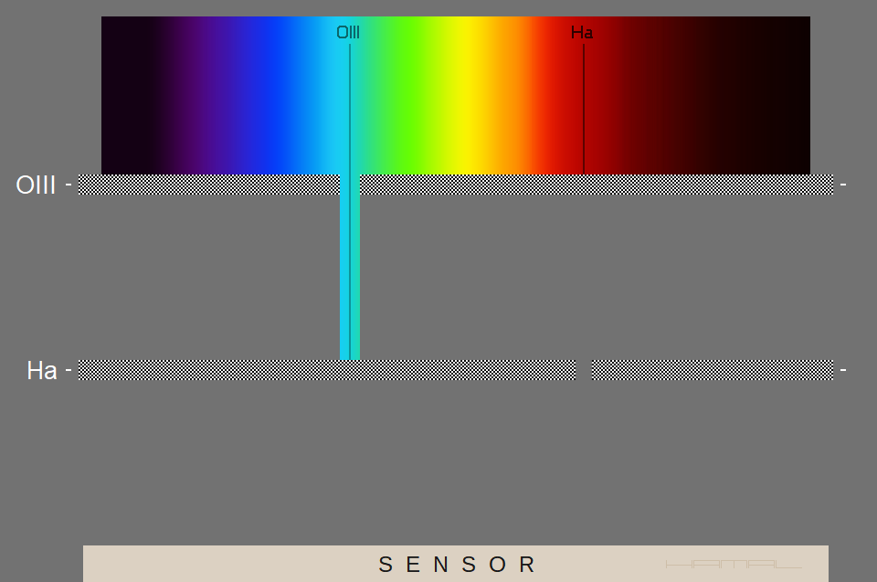 Niestety, do matrycy kamerki nic nie dociera. Filtr OIII przepuścił jedynie wąską stróżkę widma w okolicy OIII, jednak gdy trafiła ona na filtr Ha, zostaje w całości zablokowana. A może trzeba spróbować odwrotnie? Do filtra Ha dodajmy filtr OIII. Ha + OIII
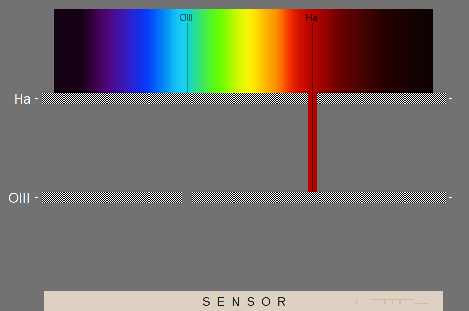 Nadal nic. Jak widzimy, natura filtrów jest taka, że łącząc ze sobą kolejne, można jedynie przycinać jeszcze bardziej widmo, natomiast łączyć przepuszczanych pasm, takich, które nie posiadają części wspólnej, się nie da. Można natomiast za pomocą filtra Dual-band i filtrów B lub G odseparować samo OIII, blokując Ha. . Dual-band Filter (OIII i Ha) + B
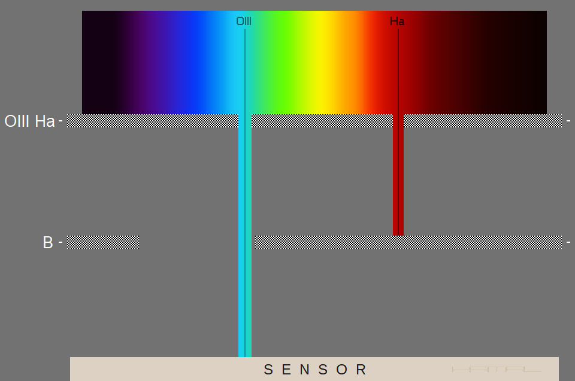 Dual-band Filter (OIII i Ha) + G
Lub za pomocą filtra R oseparować samo Ha, blokując OIII. . Dual-band Filter (OIII i Ha) + R
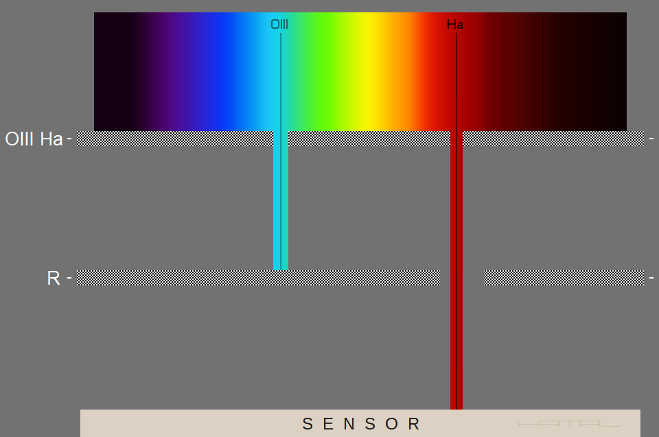 Filtry powyżej rysowane są w sposób umowny i aby mieć pewność, że rozumiecie naturę prezentowanych tu grafik, przedstawiam poniższe zestawienie. Wszystkie pokazują dokładnie to samo, ale na trzy różne sposoby. Filtr czerwony - umownie R
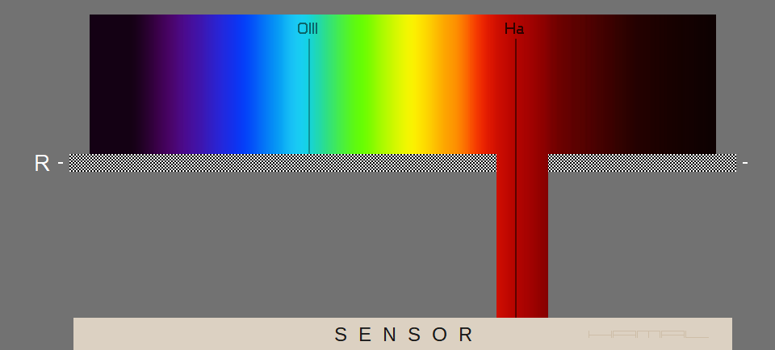 Filtr czerwony - umownie R
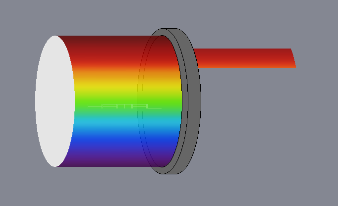 Filtr czerwony - w rzeczywistości R
 WRÓĆ DO WYKAZU DZIAŁÓW ➤ ❚ SPRAWNOŚĆ FILTRÓW Aby nie było tak łatwo, istnieje jednak pewna zawiłość. :) To nie jest tak, że gdy dany zakres widma trafia w filtrze na brak blokady, to przechodzi dalej nienaruszony, niestety, filtr wykonując swoją pracę, marnuje część przepuszczanego widma. Tylko brak filtra daje nam sprawność 100%, każdy filtr jakiś procent przepuszczanego pasma marnuje. Jedne filtry posiadają sprawność na poziomie 98%, czyli marnują jedynie 2% docierającego do nich światła, a 98% przepuszczają dalej, inne mają sprawność 80%, czyli marnują 20% docierającego do nich światła, a 80% przepuszczają dalej. Dla przykładu weźmy filtr o sprawności 70%, czyli taki, który przepuszcza 70% danego zakresu światła, a 30% marnuje. Nakręćmy przed kamerką trzy takie filtry, jeden na drugi. Co się stanie? Pierwszy zmarnuje nam 30% docierającego światła, przepuści 70%, kolejny z tych 70% zmarnuje nam kolejne 30% i przepuści 70%, czyli wynikowo już tylko 50%, kolejny zmarnuje kolejne 30% z naszych 50% i przepuści 70%, czyli do sensora ostatecznie dotrze jedynie 35% pierwotnego światła. L + L + L
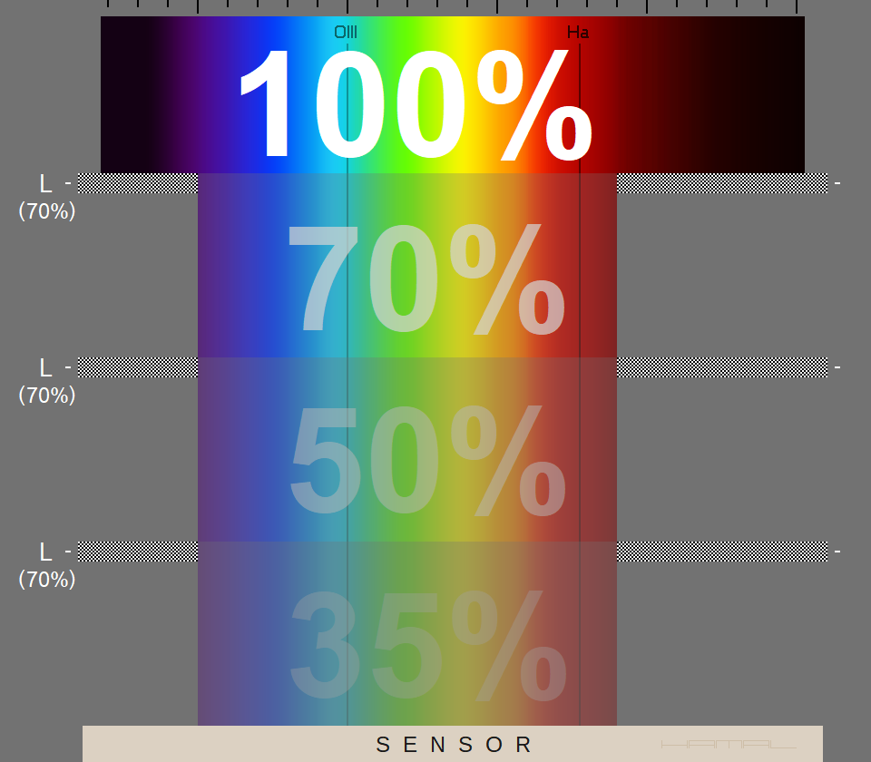 Wróćmy ponownie do przykładu odnośnie zastosowania razem filtrów UHC i Ha. Patrz poniżej. To nie jest tak, jak w uproszczeniu ustaliliśmy kilka akapitów wyżej, że filtr UHC, dodany do filtra Ha, nic nie wnosi, no bo w kontekście przycinania zakresu pasma, to faktycznie nie wnosi on nic, ale... już w kontekście sprawności układu optycznego, ma swój udział (grafika poniżej). Trochę wiązki światła zmarnuje nam filtr wąskopasmowy Ha (1), trochę zmarnuje filtr UHC (2) i do matrycy dotrze mniej, niż gdyby filtra UHC tam nie było. Ha + UHC
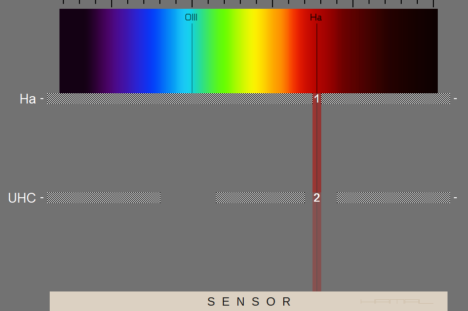 Sprawność filtrów producenci prezentują za pomocą wykresów. Poniżej przykładowy wykres dla filtra UHC. Na lewo jest skala sprawności. Poniższy wykres oznacza, że filtr UHC przepuszcza pewien zakres widma w okolicach OIII, oraz w okolicach Ha, i czyni to ze sprawnością 90%. . 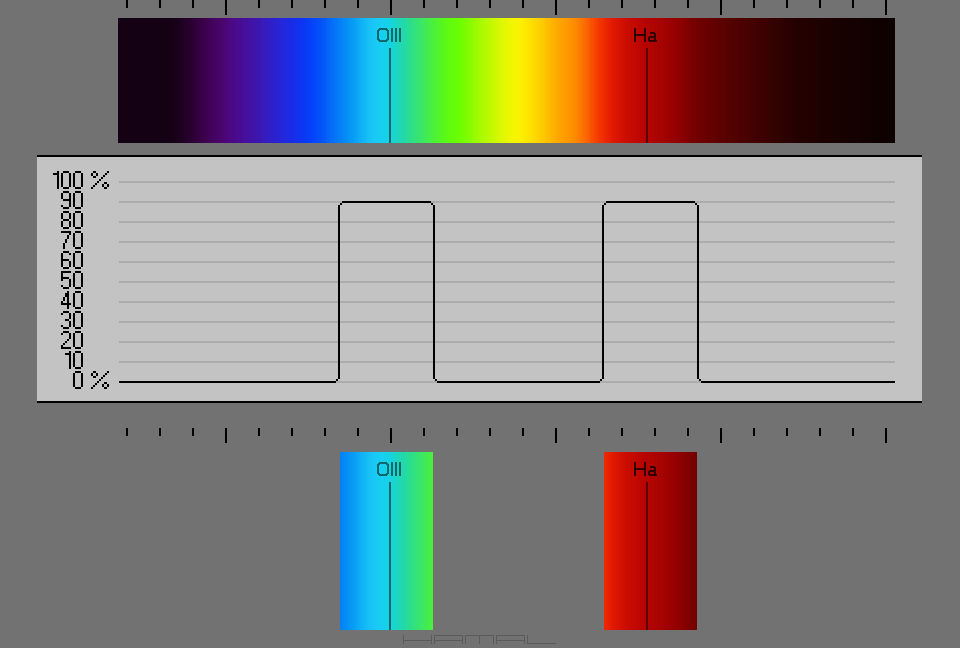
Lub dla przykładu (poniżej) weźmy filtr wąskopasmowy Ha. Poniższy wykres oznacza, że filtr Ha przepuszcza pewien zakres widma w okolicach Ha, i czyni to ze sprawnością 90%. . 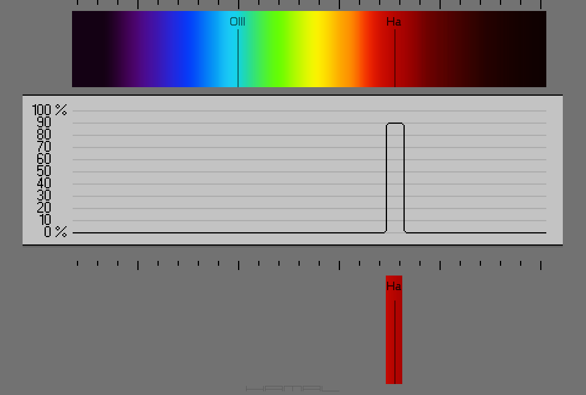
Dla innego sposobu zobrazowania zagadnienia, jak sprawność poszczególnych filtrów wpływa na wynik końcowy zastosujemy poniższy schemat. Nie każdy musi widzieć procenty :) Z widma wypływa pionowo 10 rzędów kresek symbolizujących 10 fotonów jako 100%, czyli jedna kreska na każde 10%. 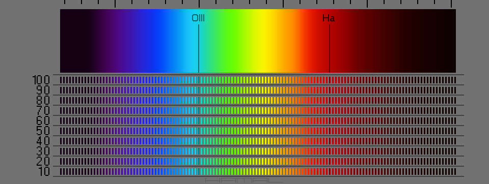
Podepnijmy do układu filtr UHC. Jak widzimy, gdzie filtr miał wyciąć widmo, to wyciął, gdzie filtr miał przepuścić widmo, to przepuścił, tylko... że posiadając sprawność 90%, przepuścił po 9 fotonów z 10, po 1 z 10 zmarnował. 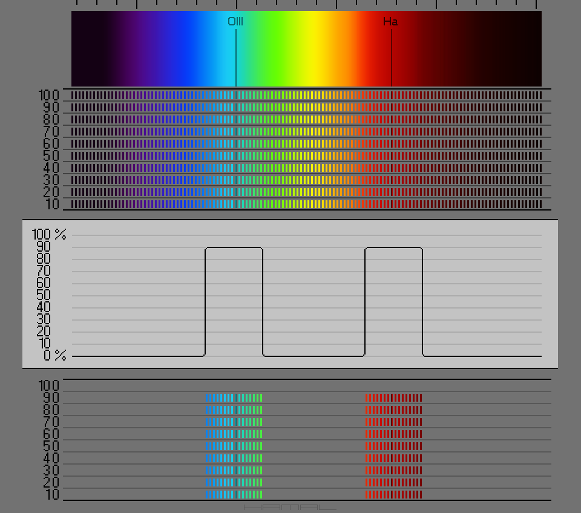
Dopnijmy dodatkowo do filtra UHC, filtr Ha, jak widzimy poniżej, filtr Ha gdzie miał dociąć zakres, to dociął, a gdzie miał przepuścić zakres, tam przepuścił, tylko że posiadając sprawność 90%, z przepuszczonych przez UHC 9 na 10 fotonów, przepuścił po 8 z 9 fotonów, czyli po 1 z 9 zmarnował. Więc ostatecznie z 10 fotonów widma, do matrycy dotarło nam 8. Wniosek? Nie warto instalować zbędnych szkiełek w torze optycznym. 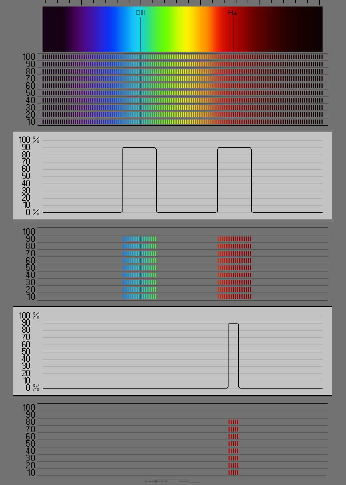
WRÓĆ DO WYKAZU DZIAŁÓW ➤ ❚ SPRAWNOŚĆ FILTRA A SPRAWNOŚĆ MATRYCY Kolejną kwestią jest sprawność filtra w odniesieniu do sprawności matrycy. Mam filtr Ha o sprawności 90%! Będę więc łapał 9 fotonów z 10 :D Chciałbyś :P Projektując cyfrową matrycę fotograficzną, producent musi zdecydować, z którego pierwiastka będzie wytworzony element światłoczuły, ponieważ różne technologie wykonania, dają produkt czuły na różne długości fali. Inną technologię musimy zastosować, gdy potrzebujemy matryc naukowych, czułych na podczerwień lub ultrafiolet, inną, gdy chcemy uzyskać produkt dla klasycznej fotografii dziennej. Dodatkowo dany zakres czułości matrycy nie wynosi 100% w całym zakresie, lecz jego charakterystyka przebiega płynnie, rosnąc od któregoś momentu, aby osiągnąć czułość maksymalną i zacząć opadać, by osiągnąć zero. Tyle w ramach wyjaśnień wstępnych :) No więc... jest sobie matryca o poniższej charakterystyce czułości... . 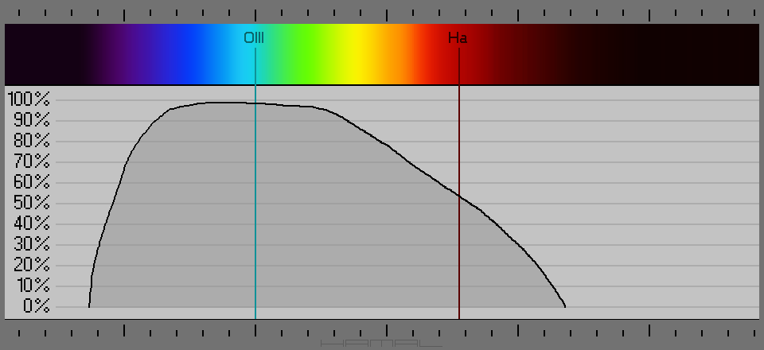 ...oraz jakiś filtr o poniższej charakterystyce sprawności... . 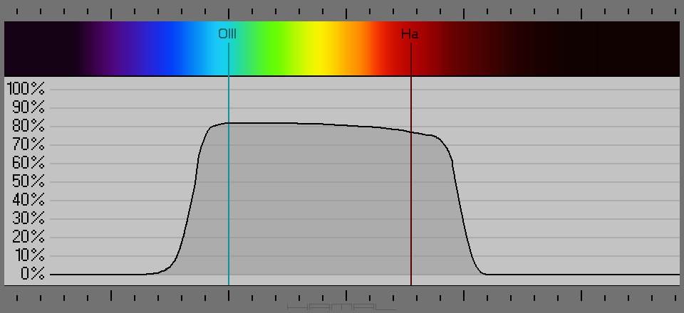 ...wtedy, przy zastosowaniu tegoż filtra i tejże matrycy, wynikowa sprawność układu matryca + filtr, nie będzie stanowiła części wspólnej charakterystyk, jak to narysowałem poniżej... .  ...lecz będzie wynikiem wypadkowej ich sprawności w danych zakresach. . 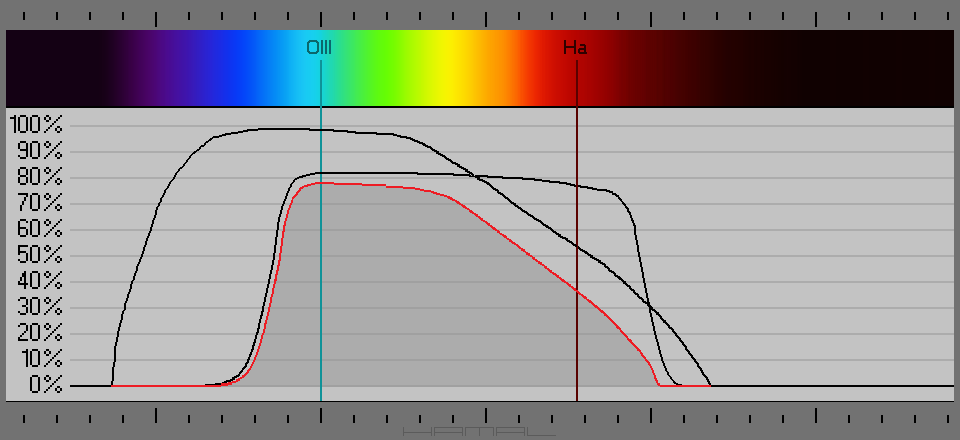 Powyższy obrazek ma charakter poglądowy, precyzyjne wyznaczenie sprawności wymaga badania każdej długości fali dla obu charakterystyk sprawności Dla przykładu (poniżej), przy sprawności filtra 80% (1) i sprawności matrycy 70% (2) wynikowa sprawność układu wynosi 56% (3), gdyż... 70% z 80% wynosi 56%. . Wracając więc do naszego przykładu z filtrem Ha o sprawności 90%... . 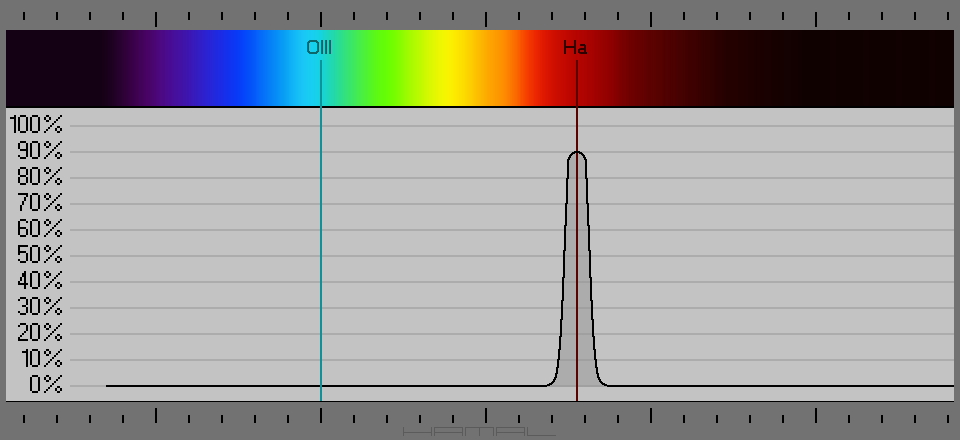 ...przypasujmy go więc do naszej matrycy. Wynik nie będzie wyglądał tak jak poniżej... . 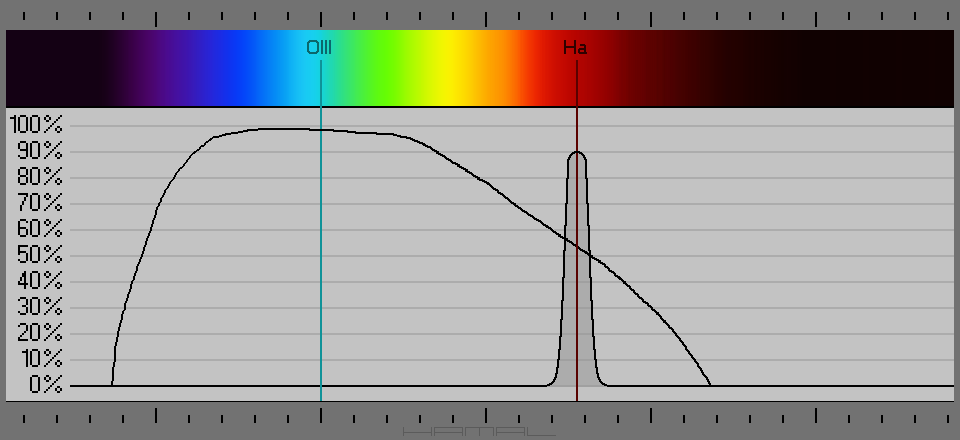 ...ani nawet tak... . ...lecz niestety tak. Ostateczny wynik sprawności filtra i matrycy w paśmie Ha, będzie wynikową 90% sprawności naszego filtra i 53% sprawności matrycy, dając nam ostatecznie 48% sprawności układu, gdyż 90% z 53% wynosi 48%. . Czyli... sprawność filtrów, sprawnością filtrów, ale... wiele jeszcze zależy od sprawności matrycy dla danego zakresu. WRÓĆ DO WYKAZU DZIAŁÓW ➤ ❚ nm - czyli nanometry Są decy-metry 1/10 metra, centy-metry 1/100 metra, mili-metry 1/1000 metra, mikro-metry 1/10 000 metra, no i nasze nano-metry 1/100 000 metra. Nie musicie pamiętać tego, jaką częścią metra jest rzeczone nano, ale zapamiętajcie, że to są nanometry (nm), bo mając styczność z filtrami, niesposobna nie posługiwać się tą wartością. Widmo światła, jak każde poznane przez ludzkość medium, także otrzymało własną miarkę, a jej wartość jest zależna od długości fali. Dla przykładu fiolet to 400nm, cyan jako miejsce styku niebieskiego i zielonego to 500nm, dalej w prawo pomarańczowy to 600nm, głęboka czerwień to 700nm. Poniżej 400nm powoli zaczyna się UV (ultrafiolet), a powyżej 700nm zaczyna się IR (podczerwień), a dokładniej to NIR (ang. near infrared) bliska podczerwień, ta właściwa podczerwień, wg. naukowców zaczyna się trochę dalej. Jak widzicie, analizując widmo światła pod kątem długości fali, fajnym punktem odniesienia jest dla nas OIII, bo posiada w uproszczeniu wartość 500nm, dla odmiany Ha to już 656nm, warto te dwie wartości zapamiętać, gdyż są najpopularniejsze i stanowią fundament astrofotografii. Są jeszcze SII 670nm, H beta 486nm, NII 658nm. 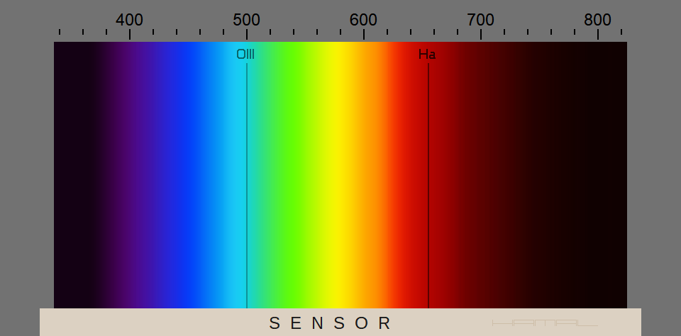
Do czego nam się to przyda? Mamy poniżej dwa różne filtry, dzięki znajomości zakresu ich pracy, bez obrazków, możemy opisać komuś ich szerokość. Pierwszy, poniższy filtr, pracuje w obrębie od 480nm do 690nm. . 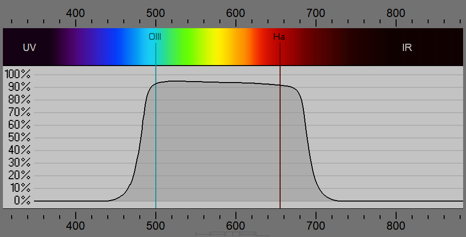
Drugi filtr działa w zakresie od 540nm do 600nm. Znając te parametry, potrafimy bez grafiki opisać komuś charakterystykę danego filtra. . 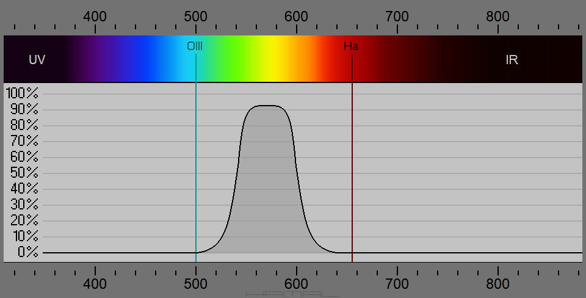
WRÓĆ DO WYKAZU DZIAŁÓW ➤ ❚ SZEROKOŚĆ FILTRA Szerokość danego filtra nie mierzymy linijką i nie podajemy w milimetrach, bo nie chodzi tu o fizyczny wymiar szkiełka :) Szerokość filtra podajemy w poznanych przed chwilą nanometrach i ma ona związek z obsługiwanymi długościami fali światła przez dany filtr. Co oznacza filtr OIII 8nm lub filtr Ha 7nm ? Oznacza to tyle, że producent filtra chcąc stworzyć filtr OIII postanowił przepuścić fragment widma z tym pasmem o łącznej szerokości 8nm, czyli od 495nm do 503nm, co daje łącznie przedział 8nm. . Natomiast filtr Ha 7nm posiadający szerokość 7nm pracuje w przedziale np. od 653nm do 660nm. . WRÓĆ DO WYKAZU DZIAŁÓW ➤ ❚ 3nm - 7nm - 12nm - 35nm | Który filtr lepszy ? Ktoś kiedyś rzekł: "Weź filtr Ha 12nm, on Ci przepuści więcej Ha", Miał rację? A no nie miał, zaraz wyjaśnię dlaczego :) Pasma same w sobie są bardzo wąskie, są symbolicznie prezentowane przez pionowe ciemniejsze kreski na grafice poniżej, a całe ich otoczenie (oznaczone białymi strzałkami), szersze lub węższe zależnie od szerokości filtra, to jedynie tło nieba i światło gwiazd. Im szerszy filtr, tym więcej razem z danym pasmem przedostaje się nam tła nieba i światła gwiazd, więc tło zdjęcia będzie jaśniejsze, a gwiazdy mocniej wypalone. Niezależnie, czy to będzie filtr 3nm, czy 35nm, czystego obrazu mgławicy składającego się z wodoru dotrze do matrycy tyle samo. Odnosząc się więc do postawionej tezy, o tym, że szerszy filtr przepuści nam więcej Ha, jak sami widzicie, więcej Ha nie przepuści, za to przepuści więcej wszystkiego dookoła pasma. 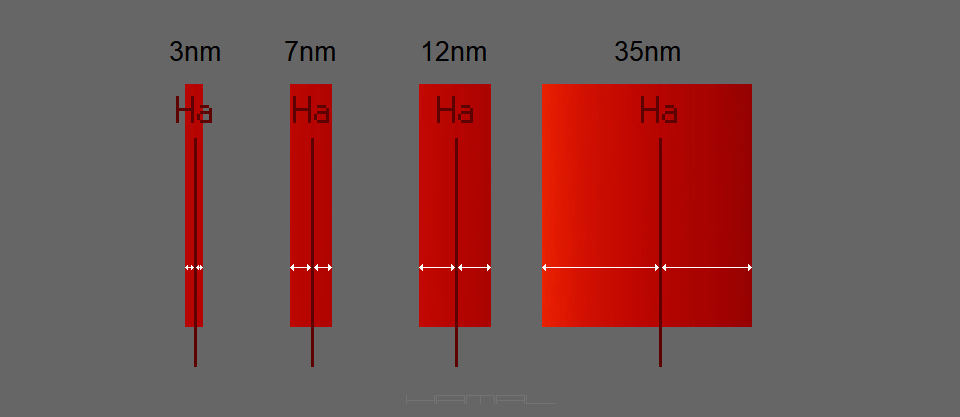 Skoro niezależnie od szerokości, każdy z tych filtrów przepuści tyle samo pasma Ha, to dlaczego węższe filtry są uznawane za lepsze? Fotografując mgławice, chcemy uzyskać jak najwięcej czystego obrazu mgławicy, wycinamy więc jak najmocniej tło nieba, aby nie zaświetlało słabych rejonów mgławicy i pozbywamy się gwiazd, aby nie walczyły o uwagę z obiektem. Więc im mniej światła przemyka w filtrze po bookach fotografowanego pasma, tym korzystniej dla nas. Tak się zagadnienie objawia w rzeczywistości :) . 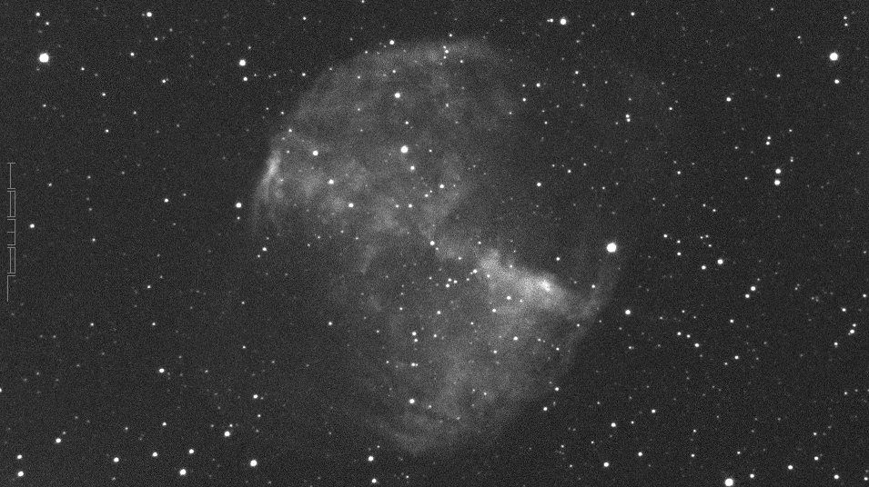 Jednak w szaleństwie pogoni za coraz węższymi filtrami istnieje pewna granica, po której przekroczeniu, światła docierającego do matrycy kamerki będzie tak mało, że praktycznie nic nie widząc w kadrze, będziemy mieli problem z ustawieniem ostrości. Przecież istnieje filtr słoneczny Ha Etalon 0.05nm, użyjmy go do astrofotografii DS :D Skoro mowa o filtrze do obserwacji Słońca Coronado Filters Double Stacking Etalon (poniżej) o szerokości połówkowej 0.05nm., zobaczcie, jak się ma wspomniany wcześniej wąski filtr Ha 3nm, do Ha 0.05nm. Poniżej 3nm i rzeczony Etalon 0.05nm. . 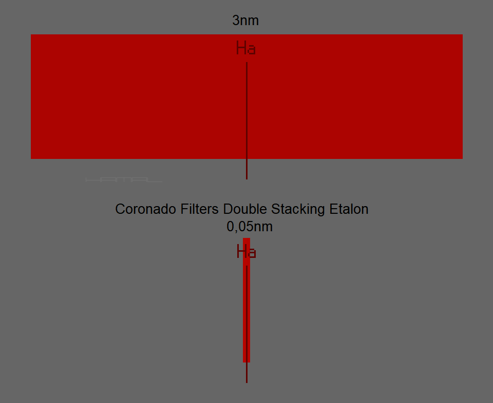 WRÓĆ DO WYKAZU DZIAŁÓW ➤ ❚ STROMOŚĆ ZBOCZY - OBRAZ WIDMA Szerokość filtra, szerokością, ale aby było jeszcze trudniej, jest jeszcze jeden aspekt, który należy znać, a mianowicie tzw. stromość zbocza. Oznacza ona tyle, że filtry nie tną widma idealnie pionowo jak nóż, od pewnej wartości do pewnej wartości, jak to dotąd w uproszczony sposób rysowaliśmy, one wchodzą na daną wartość stopniowo, i równie stopniowo z niej schodzą. Tu trzeba odnotować, że dwa podstawowe typy filtrów, czyli tzw. Wratten i Interferencyjne, mocno różnią się od siebie pod względem charakterystyki wycinania widma, zaraz się przekonacie, co mam na myśli. Wratten - to kolorowe szkiełko, które wygląda jak kolorowe szkiełko, i tym, że jest kolorowym szkiełkiem, pracuje na swoją przepuszczalność widma. Na zakres przepuszczanego widma wchodzi powoli, leniwie, aby potem powoli, leniwie z niego zejść. Filtr interferencyjny - to skomplikowana konstrukcja optyczna, która dzięki swojej budowie, precyzyjnie, nagle, wchodzi w dany przepuszczanego widma, podobnie nagle z niego schodzi. Dla lepszego zobrazowania, poniżej... Wratten, filtr o płaskim nachyleniu zboczy. . 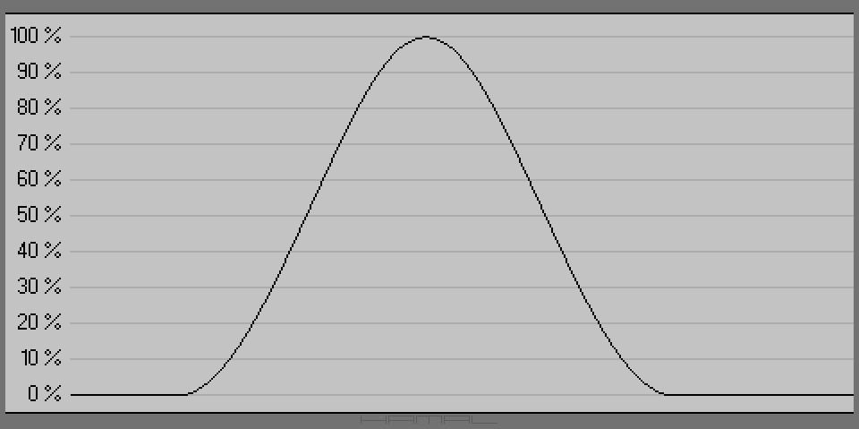
Interferencyjny, filtr o stromym nachyleniu zboczy. . 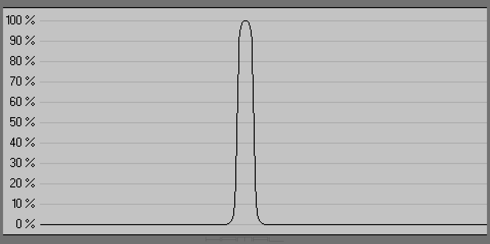
Kontynuując zagadnienie szerokości filtrów, ale już z uwzględnieniem stromości zboczy. Co dla nas oznacza szerokość pasma 20nm? W którym miejscu pagórka mierzona jest jego szerokość? Przy czubku? Przy podstawie? Odpowiedź brzmi ani jedno, ani drugie. Przyjęło się, że za szerokość pracy filtra uznaje się 50% wysokości jego sprawności, stąd określenie: szerokość połówkowa filtra (szerokość w połowie wysokości). Patrz grafika poniżej. . Skoro szerokość pracy filtra mierzy się na 50% wysokości jego sprawności, to gdy sprawność ogólna filtra wynosi 80% (jak poniżej), a nie 100% (jak powyżej), za połowę wysokości sprawności filtra przyjmuje się 40% sprawności ogólnej i tu dokonuje się pomiar szerokości jego pasma (patrz poniżej). . Jak stromość zboczy przekłada się na użyteczność filtrów? Wyobraźcie sobie, że ktoś Was sprosi o stworzenie bardzo wąskiego filtra o dużej sprawności z filtrów o płaskich zboczach. Nakładacie więc na siebie dwie charakterystyki wyglądające jak zaprezentowane poniżej, próbując uzyskać jak najwyższą i jak najwęższą część wspólną. W takim układzie część wspólna jest wąska, ale jest niska. . 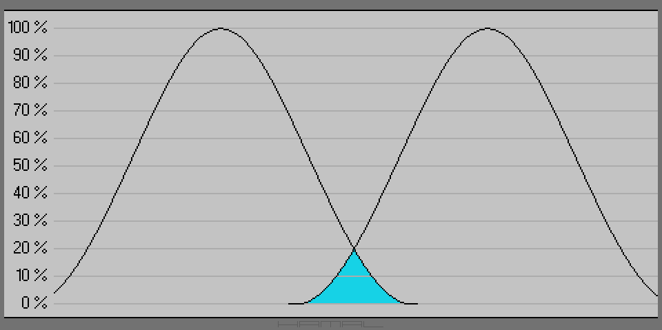
W takim układzie część wspólna jest wysoka, ale niestety jest bardzo szeroka. . 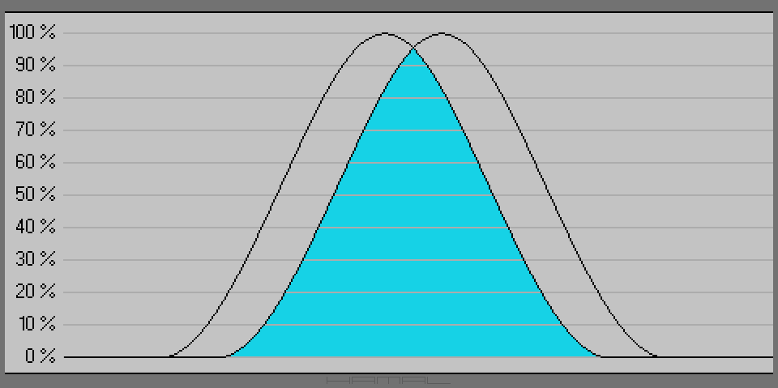
Słabo to wychodzi, prawda? Nie sposobna łącząc ze sobą tak rozlazłe powyższe charakterystyki, uzyskać czegoś na wzór poniższego. Przypomina to próbę usypania wieżowca z sypkiego piasku. Poniższą charakterystykę uzyskamy jedynie z filtrami o stromych zboczach. Zasadniczo, w świecie filtrów im zbocza są bardziej strome, tym lepiej. 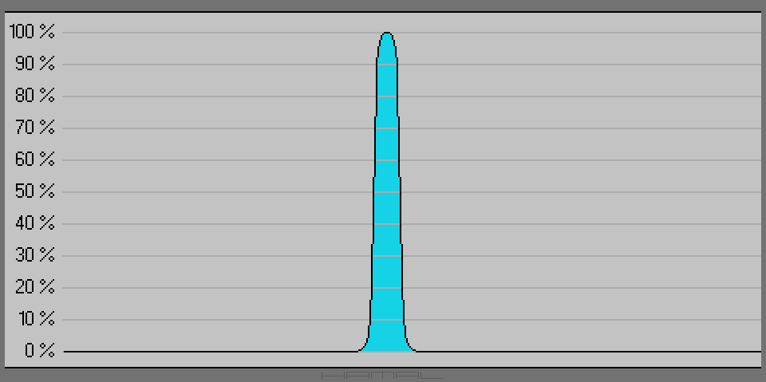
OBRAZ WIDMA A jak nachylenie zboczy wpływa na obraz przepuszczanego widma? Obraz widma zależy od sprawności filtra w danym miejscu. - Jeśli filtr dla danego koloru w danym miejscu posiada sprawność 100%, na obrazie widma dany kolor będzie wyświetlany z wypełnieniem 100%. - Jeśli filtr dla danego koloru w danym miejscu posiada sprawność 0%, na obrazie widma dany kolor będzie wyświetlany z wypełnieniem 0%. Będzie reprezentowany przez czerń, czyli nic, zero, pusto, ciemno. - Jeśli filtr dla danego koloru w danym miejscu posiada sprawność 50%, na obrazie widma dany kolor będzie wyświetlany z wypełnieniem 50%. Będzie połową przepuszczanego koloru i połową czerni. - Jeśli filtr dla danego koloru w danym miejscu posiada sprawność 10%, na obrazie widma dany kolor będzie wyświetlany z wypełnieniem 10%. Będzie 10% przepuszczanego koloru i 90% czerni.
. 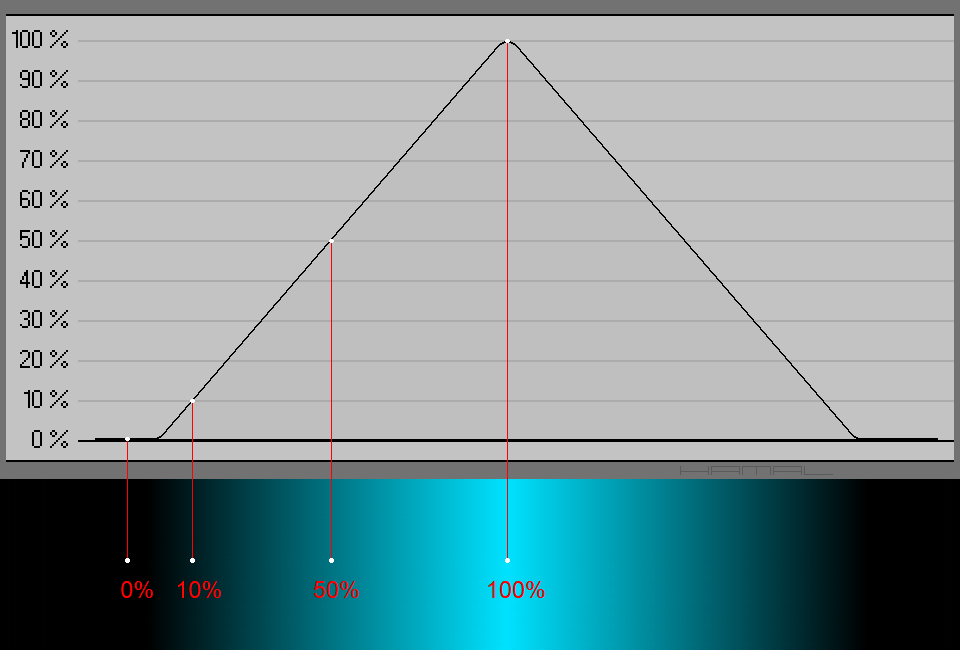 W życiu rzeczywistym rzadko mamy do czynienia z charakterystykami w kształcie przedstawionej powyżej piramidki. Poniżej prezentacja typowych wykresów i obrazów widm. Filtr o płaskim nachyleniu zboczy
. Obraz widma
. 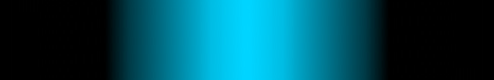 Doświadczone oko, widząc już sam obraz widma, zorientuje się, że ma do czynienia z filtrem o płaskim nachyleniu zboczy, gdyż widmo jest mocno rozciągnięte, bardzo powoli słabnie na boki, aby leniwie przejść w czerń. Gdy jednak widmo wygląda jak poniżej... Obraz widma
. ...już wiemy, że mamy do czynienia z filtrem o stromych zboczach i jego wykres wygląda tak... Filtr o stromym nachyleniu zboczy
. 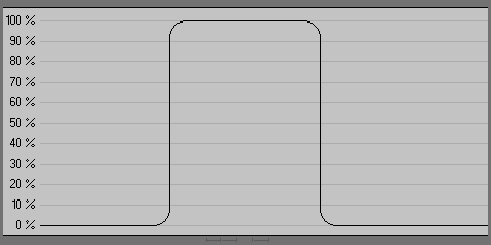 i analogicznie... Filtr o stromym nachyleniu zboczy
. Doświadczone oko, widząc już sam obraz widma, zorientuje się, że ma do czynienia z filtrem o stromym nachyleniu zboczy, gdyż widmo jest mocno skupione, błyskawicznie słabnie na boki od centrum, aby w chwilę przejść w czerń. Obraz widma
. Jak widzicie, intensywność widma odpowiada sprawności filtra w danym miejscu, im widmo mocniejsze, tym sprawność wyższa, im widmo bledsze, tym sprawność filtra w tym rejonie jest słabsza. Wykres sprawności w odniesieniu do stromości zboczy z oznaczeniem procentowym. 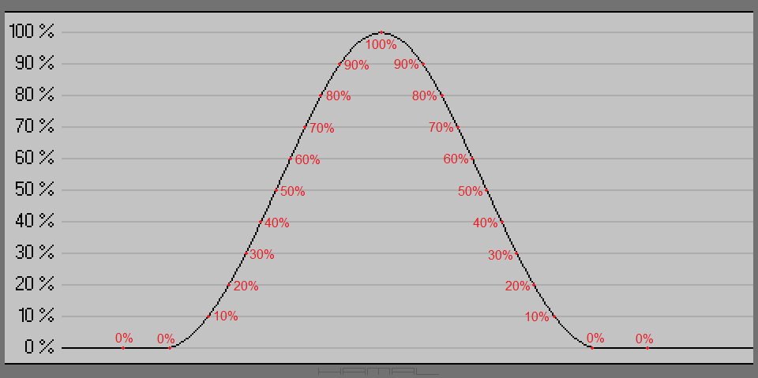
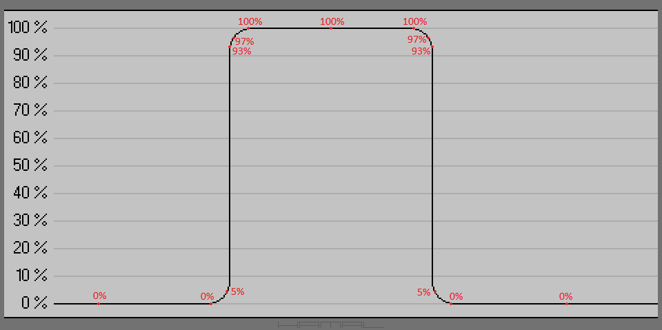
WRÓĆ DO WYKAZU DZIAŁÓW ➤ ❚ PODSTAWOWE RODZAJE FILTRÓW Rodzaje filtrów z uwagi na zakres pracy. Long Pass Filter | Filtr długoprzepustowy . . Filtr tego typu przepuszcza wszystkie długości widma powyżej swojej wartości granicznej, a blokuje wszystkie poniżej tej wartości. Dla przykładu filtr 480nm Long pass przepuszcza 500nm, 550nm, 600nm itd, a blokuje 450nm, 400nm, 300nm. Short Pass Filter | Filtr krótkoprzepustowy . . Filtr tego typu przepuszcza wszystkie długości widma poniżej swojej wartości granicznej, a blokuje wszystkie powyżej tej wartości. Dla przykładu filtr 700nm Short pass przepuszcza 650nm, 600nm, 550nm, 500nm itd, a blokuje 750nm, 800nm, 850nm. Band Pass Filter | Filtr pasmowoprzepustowy . . Filtr tego typu przepuszcza pewien zakres widma o pewnej szerokości. podkategoria Bandpass
Wide Band Pass Filter | Filtr szerokopasmowy przepustowy . . Filtr tego typu przepuszcza pewien zakres widma od pewnej wartości do pewnej wartości. podkategoria Bandpass
Narrow Band Pass Filter | Filtr wąskopasmowy przepustowy . . Filtr tego typu przepuszcza wąskie pasma zakresu widma w zakresie swojej pracy. podkategoria Bandpass
Multi Band Pass Filter | Filtr wielopasmowo przepustowy . . Filtr tego typu przepuszcza wiele różnych wąskich zakresów widma jednocześnie. IR cut Filter . . Filtr tego typu blokuje podczerwień (IR), przepuszczając pozostałą część widma. IR pass Filter . . Filtr tego typu przepuszcza podczerwień (IR), blokując pozostałą część widma. Filtr tego typu stosuje się często w astrofotografii planetarnej dla poprawienia stabilności obrazu planet i Księżyca. IR/UV cut Filter . . Filtr tego typu wycina i podczerwień (IR), i ultrafiolet (UV), przepuszcza jedynie widzialne widmo światła mieszczące się pomiędzy UV i IR. Filtr tego typu stosuje się często jako filtr luminancji (L) w astrofotografii RGB. WRÓĆ DO WYKAZU DZIAŁÓW ➤ ❚ KOLOR PASMA OIII Pasmo OIII jest zielone czy niebieskie? A może jednak turkusowe? Jaki mają kolor mgławice planetarne składające się z OIII? Czy to przypadek, że filtry B i G z zestawu filtrów RGB Baader zachodzą na siebie zakresem w obrębie OIII ? Czy to dlatego, że producent postanowił być fajnym wujkiem, i jak już wcześniej wspominałem, zapragnął umożliwić nabywcom zestawienie obu filtrów w filtr OIII? Problem jest bardziej złożony i zaczyna się od odwiecznego sporu o to, czy OIII jest zielone, czy niebieskie, choć jak widać, na spektrum wypada w turkusie, a więc jest zielono-niebieskie, lub niebiesko-zielone, jak kto woli. Więc, aby uzyskać taki efekt przy składaniu zdjęcia RGB, Baader zmuszony był, i filtrem G, i filtrem B, wejść na pasmo OIII, aby po zsumowaniu obu kolorów powstawał kolor turkusowy. Dla odmiany dział naukowy ZWO uznał najwidoczniej, że OIII jest jednak zielone, bo charakterystyka ich filtrów wygląda następująco, pasmo OIII wypada w obrębie filtra zielonego (G) i jedynie na dole muska niebieski (B). W takim zestawie filtrów mgławica M27 będzie zielono-czerwona, a nie jak u Baader-a, turkusowo-czerwona. Warto posiadać taką wiedzę, aby w pełni świadomie dokonywać wyboru filtrów, kompletując zestaw astrofotograficzny. Astrodon, też świadomie (wspominają o tym w opisach), wybrał kolor turkusowy dla pasma OIII, czyli u nich filtry B i G, też zachodzą na siebie zakresem. WRÓĆ DO WYKAZU DZIAŁÓW ➤ ❚ SAMODZIELNE BADANIE FILTRÓW Co prawda, producenci rysują na etykietach deklarowane zakresy pracy filtrów, jednak nie musimy im wierzyć na słowo, możemy samodzielnie sprawdzić, jak działa dany filtr, w tym celu musimy zbudować prosty amatorski spektroskop. Istnieją różnie rodzaje tego urządzenia, polecam tę wersję: Spektroskop - Opis budowy. Jest ona najlepsza z proponowanych w sieci, nadto nie wymaga usuwania powłoki odblaskowej z płyty, ani jej cięcia, a cięcie płyty, czy łamanie, nie jest bezpieczną czynnością, z uwagi na jej twardość i sposób, w jaki pęka, tworząc drobne, ostre, przeźroczyste odpryski. Przykładowe wykorzystanie możliwości, jakie daje nam posiadanie własnego spektroskopu. Posiadamy filtr L Baader IR/UV-cut oraz stary filtr L GSO IR-cut, oba teoretycznie czynią to samo zadanie, ale fotografując niebo, dostrzegamy, iż w filtrze L GSO IR-cut jakoś dziwnie mało wpada nam do kamerki wodoru (Ha), a przecież dla nas astrofotografów wodór jest bezcennym pasmem. Ale... posiadając spektroskop, możemy dokonać badania, które ujawni nam przyczynę takiego stanu rzeczy. Przystawiamy przed okienko spektroskopu filtr L Baader IR/UV-cut, a po chwili filtr L GSO IR-cut i dostrzegamy, że filtr L GSO IR-cut kończy się wcześniej w zakresie czerwieni niż filtr L Baader IR/UV-cut. Czy to możliwe, dumamy, że producent wypuścił taki bubel i sprzedaje filtr L, który kończy się zakresem pracy tuż przed pasmem Ha? Dla pewności bierzemy dla porównania filtr Ha 7nm i stwierdzamy ostatecznie, iż nasze odkrycie staje się smutnym faktem. GSO w starszych modelach filtra L, od strony czerwieni, zamykało pasmo tuż przed pasmem Ha i wodór, zamiast wpadać do naszych kamerek, jest wycinany przez filtr. Dla lepszego zobrazowania, poniżej zestawione ze sobą zdjęcia poszczególnych filtrów wykonane za pomocą opisanego tu spektroskopu. . Inny przykład. Czy to prawda, że filtr Neodymowy osłabia zakres widma w obrębie Light Pollution (LP)? Sprawdźmy! Bierzemy do badania filtr L oraz filtr Neodymowy i robimy zestawienie porównawcze. Jak widać poniżej, badanie wykazało, iż filtr Neodymowy faktycznie wycina część pasma w obrębie Light Polution (LP). . Ale co tam filtr Neodymowy, zobaczcie jak IDAS LPS-D1 wycina widmo w tym rejonie. . Można też wykonać wiele innych badań, nie trzeba producentom wierzyć na słowo, fajnie jest poczuć empirycznie to, co dla nas nie jest widoczne gołym okiem :) Opisaną w tym poradniku wiedzę wykorzystałem TU i TU Przyznacie chyba sami, że potrafi się przydać astronomowi amatorowi :) WRÓĆ DO WYKAZU DZIAŁÓW ➤ ❚ RODZAJE FILTRÓW Z UWAGI NA KONSTRUKCJĘ - Absorpcyjne/Pochłaniające/Barwne Wratten . W filtrze optycznym absorpcyjnym jest wykorzystywane zjawisko selektywnej absorpcji światła. Filtry szklane kolorowe są wykonane ze szkła optycznego Schott. Właściwości spektralne tych filtrów są jednorodne w całej ich aperturze i niezależne od kąta padania, i tu ich przewaga nad droższymi filtrami interferencyjnymi. Filtry Wratten zostały nazwane od nazwiska założyciela pierwszej firmy fotograficznej, brytyjskiego wynalazcy Fredericka Wrattena. Oznaczenia filtrów Wratten to system składający się z liczby, po której czasami następuje litera (litery rosną wraz ze wzrostem siły) polecam WYKAZ. Liczba określa kolor filtra, ale nie koreluje z długością przenoszonego pasma. Ciekawa ROZPISKA widm podstawowych filtrów. Filtry typu Wratten są tanie w produkcji i z uwagi na swoją cenę są szeroko dostępne amatorom. Są odporne na zarysowania i na czynniki środowiskowe oraz chemiczne. Niestety, słabe nachylenie zboczy transmisji, sprawia, że nie nadają się do zastosowań precyzyjnych. - Dichroiczne/Interferencyjne . Filtry interferencyjne wykorzystują efekt interferencji fal w celu otrzymania żądanej transmisji spektralnej. Filtry te są produkowane poprzez osadzanie na podłożu cienkich warstw o różnych współczynnikach załamania. Niestety, właściwości spektralne tych filtrów nie są jednorodne w całej ich aperturze i są zależnie od kąta padania, i tu przewaga tańszych filtrów absorpcyjnych. Wiele współczesnych filtrów Interferencyjnych to tak naprawdę filtry Dichroiczne, nazywane też interferencyjnymi, ale nie stanowiące w klasycznym rozumieniu filtrów interferencyjnych jak Etalon Ha. Ich budowa różni się w ten sposób, że klasyczny filtr interferencyjny stanowią dwa podłoża z powłokami półprzepuszczalnymi przedzielone na środku warstwą rozdzielającą, natomiast filtry Dichroiczne stanowią filtr o jednym podłożu, barwnym lub neutralnym (bezbarwnym) i napylonymi na nim jednostronnie wieloma odpowiednimi powłokami w liczbach dochodzących do 100 lub więcej. Polecam niniejszy OPIS. Filtry tego typu, są drogie produkcji i z uwagi na swoją cenę są mniej dostępne amatorom, są mniej odporne na zarysowania i na czynniki środowiskowe oraz chemiczne W zamian posiadają strome nachylenie zboczy, możliwość dowolnego manipulowania zakresami przepuszczania i blokowania, oraz wysoka wartość transmisji sprawiają, co sprawia, że są wręcz stworzone do zastosowań precyzyjnych takich jak Narrow Band, Multi Band Pass Filter itp. - Interferencyjne . Filtry interferencyjne w klasycznym rozumieniu stanowią dwa płaskie równoległe podłoża szklane zwane etalonami z napylonymi od wewnątrz powłokami półprzepuszczalnymi przedzielonymi na środku warstwą rozdzielającą. Przykład takiego filtra w astronomii stanowi Etalon Ha. PEWNE KWESTIE TECHNICZNE FILTRÓW - Polerowanie płomieniowe . W uproszczeniu polerowanie płomieniowe polega na lekkim stopieniu gorącym płomieniem powierzchni szkła/filtra celem utworzenia gładkiej powierzchni na materiale. Z uwagi na niższy koszt takiego polerowania, często jest ono stosowane w tanich filtrach typu Wratten. Dla odmiany Baader szczyci się faktem, iż ich filtry barwne serii Lonpass są filtrami polerowanymi optycznie na idealną równoległość, oraz gwarantującą jakość powierzchni dla ćwierć długości fali, twierdząc, że filtry polerowane płomieniowo nie stanowią wystarczająco precyzyjnych elementów optycznych. - Cięcie filtrów . Istnieją dwa sposoby wytworzenia filtrów okrągłych lub kwadratowych. - Metoda pierwsza. Spory arkusz jest polerowany i powlekany warstwowo w całości, a następnie wycinane są filtry do żądanego rozmiaru. Ta metoda produkcji filtrów jest znacznie tańsza, ale nie gwarantuje ich jakości. Powierzchnia często polerowana jest wspomnianą uprzednio metodą płomieniową, napylone filtry w momencie cięcia poddawane są siłom, którym tak precyzyjna optyka poddawana być nie powinna, mogą także ujawnić się potem jakieś naprężenia, nadto, powłoki w miejscach cięć zostają uszkodzone, co może czasem objawiać się ich dalszą degradacją. - Metoda druga. Filtry są wycinane z arkusza na wymiar, następnie dwustronnie polerowane optycznie na równoległość i gładkość powierzchni, na koniec powlekane warstwowo, a brzegi powłok zabezpieczane. Jest ona dużo droższa, ale gwarantuje dużo lepszą jakość produktu. WRÓĆ DO WYKAZU DZIAŁÓW ➤ ❚ DŁUGOŚĆ FALI A ROZDZIELCZOŚĆ Długość fali ma bezpośredni wpływ na rozdzielczość obrazowania, zrozumie i przekona się ten, kto spróbuje sfotografować parę gwiazd na granicy rozdzielczości teleskopu filtrem 400nm i filtrem 800nm. Ale po kolei... Powszechnie wiadomo, że aby oszukać słabszy seeing, fotografując np. Księżyc, wystarczy zastosować filtr IR pass i obraz stanie się stabilniejszy. Wiedzieć jednak należy, że za cenę poprawy jakości obrazu, tracimy rozdzielczość optyki i zamiast od razu stosować filtr 800nm, może warto najpierw wypróbować filtr 610nm Dla przykładu, widmo w zakresie 400nm rysuje obraz plamką 2x mniejszą niż widmo w zakresie 800nm, gdyby więc stworzyć filtr fioletowy 5nm (w przedziale 400nm-405nm) . ...oraz filtr podczerwony 5nm (w przedziale 800nm-805nm)... . ... i kazać tym filtrom narysować malutki kraterek księżycowy, uzyskany rezultat prezentowałby się jak poniżej. Rozmiar plamki obrazowania nie wynika z szerokości filtra (oba posiadają szerokość 5nm, zresztą ona sama w sobie nie ma wpływu na rozdzielczość), lecz z długości fali, którą rzeczony filtr obsługuje. Fiolet pracuje na 400nm, a IR (podczerwień) na 800nm. Im krótsze pasmo, tym plamka obrazowania jest mniejsza, im dłuższe pasmo, tym plamka obrazowania jest większa. Jak więc widzicie, nie można bezkarnie, celem uniknięcia gorszego seeingu, z obrazowaniem wchodzić coraz głębiej w podczerwień, gdyż tracimy wtedy na rozdzielczości. Doskonałym przykładem tego, jak długość fali wpływa na rozdzielczość na granicy dyfrakcji, jest GRAFIKA pochodząca ze STRONY. Moje opracowanie na temat rozdzielczości w astrofotografii znajdziecie TUTAJ WRÓĆ DO WYKAZU DZIAŁÓW ➤ ❚ BLUESHIFT Dawniej wszystko wydawało się być proste, jednak obecnie astromaniacy powoli stają się inżynierami elektronikami i optykami, systematycznie zgłębiając budowę i zasadę działania kamer, poznając i rozbierając na drobne budowę i działanie filtrów, fakt, że zmieniły się okoliczności, ale po kolei ... Blueshift był z nami od zawsze, ale nie wychylał się, skąd więc teraz takie poruszenie z jego powodu? Dawniej posiadanie teleskopu o światłosile f/8 to było coś ... Potem pojawiły się sprzęty o światłosile f/4, ależ one były szybkie ... Obecnie światłosiła f/2 nikogo nie dziwi i Blueshift stał się istotny. . Dawniej posiadanie filtra Ha o szerokości 30nm to było coś ... Potem zaczęto produkować coraz węższe filtry, ale to jeszcze nie był ten moment ... Obecnie mamy filtry o szerokości 3nm - 2nm i Blueshift stał się istotny. Więc... . Gdy producent projektuje i wytwarza filtr, to podejmuje decyzję, jakie pasmo ma ten filtr przepuszczać. Czy to będzie Ha, OIII, SII lub jeszcze inna linia widmowa, najważniejsze jest to, aby dany filtr swoim zakresem przepuszczania ją obejmował, a najlepiej w szczytowym punkcie transmisji. Gdyby jednak, z jakiegoś powodu, uzyskana przez producenta charakterystyka, w czasie użytkowania, mniej lub bardziej uciekała w bok ... jak to wpłynie na efekt końcowy? Bo gdy zakres transmisji, przesuwa się mniej lub bardziej, w takim filtrze ... . ... lub takim ... . . ...to jeszcze nic złego się nie dzieje ... ... ale gdy niniejsze zjawisko występuje w takim filtrze ... . ... no to Houston, mamy problem, ponieważ dwa uprzednie filtry, niezależnie od sytuacji, nadal pracują ze sprawnością 90%, ale ostatni, najwęższy filtr, radykalnie stracił na transmisji. Wróćmy teraz do światłosiły ... ... dodajmy sensor i filtr ... . ... aby stwierdzić, że niezależnie od światłosiły, w osi optycznej nic szczególnego się nie dzieje ... . ... jednak gdy weźmiemy pod uwagę skrajne promienie światła ... . ... to się okazuje, że zależnie od światłosiły obiektywu, skrajne promienie światła padają na filtr pod coraz większym kątem. . I tu pojawia się nasz tytułowy Blueshift, bo jak się okazuje, kąt, pod jakim promień światła pada na filtr, ma wpływ na pracę filtra. Jeśli zaprojektujemy filtr, który przepuszcza widmo w danym zakresie, to faktycznie tak jest, ale tylko wtedy, gdy światło pada na niego prostopadle. . Blueshift dzieje się wtedy, gdy światło na filtr pada pod kątem. Blueshift jest tym większy, pod im większym kątem pada światło na filtr. . Podsumowując, wracamy do początku opowieści :) Blueshift był z nami od zawsze ... ale ... Dawniej teleskopy o światłosile f/8 ... Dawniej filtry o szerokości 30nm ... ... Blueshift nie był istotny. Potem sprzęty o światłosile f/4 ... Potem węższe filtry ... ... ale to jeszcze nie był ten moment, by Blueshift odgrywał jakąś rolę. Obecnie światłosiły f/2 ... Obecnie filtry 3nm - 2nm ... ... i Blueshift stał się krytyczny.  Blueshift sprawia, że zakres pracy filtra przesuwa się, w miarę odchylania się promieni światła od kąta prostego, sprawiając, że zaplanowana przez producenta optymalna charakterystyka transmisji filtra przepada. A tak właściwie ... to dlaczego Blueshift? :) Z języka angielskiego blue-niebieski, shift-przesunięcie. Ale dlaczego przesunięcie ku niebieskiemu? Bo przesunięcie następuje zawsze w kierunku widma niebieskiego. W przypadku naszego opracowania z lewą stronę. . Zakres migracji pasma filtra zastosowany na animacjach nie jest przypadkowy i jest właściwy dla kątów skrajnych promieni światła przy f/8, f/4, f/2. Blueshift jest tym większy, im większy jest kąt odchylenia padania promieni światła na filtr od kąta prostego, a to implikuje kolejne ciekawe zależności. . W obrębie obiektywu o światłosile f/2 występują promienie światła prostopadłe względem filtra i takie o odchyleniu 1°, 2°, 3°, 4°, ..., 11°, 12°, 13°, 14°, i one wszystkie przechodzą przez nasz filtr ... . ... a to oznacza, że to nie jest tak, że cały obiektyw o światłosile f/2 pracuje z danym filtrem z obniżoną sprawnością, lecz sprawność jego obniża się z w miarę oddalania się promieni światła od osi optycznej. . Pech chce, że sprawność filtra maleje, wraz z przemieszczaniem się w zewnętrzne rejony obiektywu, czyli te, o największej powierzchni ...  ... więc przekornie, filtr pracuje najwydajniej tam, gdzie światła jest najmniej, a pracuje najgorzej tam, gdzie światła jet najwięcej. .  Gdy więc fotografujemy środkiem kadru, małą mgławicę planetarną, bardzo wąskim filtrem OIII, o sprawności 90%, ciesząc się, że nic się nie marnuje z naszego super jasnego teleskopu f/2, okazuje się, że środek naszego filtra faktycznie pracuje ze sprawnością 90%, jednak im dalej brzegu, tym bardziej sprawność maleje i z naszego 90% bezcennego OIII pozostaje dużo mniej, niż nam się wydaje. Czy nie ma na to zjawisko żadnej rady? Oczywiście zaczęto poszukiwać sposobu zaradzenia problemowi, poniżej wymienię trzy przykłady. . 1 - sposób naukowy 2 - sposób sprytny 3 - sposób absurdalny ___________________________________ . 1 sposób - naukowy . Chcąc zaradzić opisywanemu tu zjawisku Blueshift, zamiast filtrów o jednorodnej charakterystyce ... . ... podejmuje się próby konstruowania filtrów, których charakterystyka zmienia się w miarę oddalania się od centrum krążka. . Taki niejednorodny filtr, dla prostopadłych promieni światła, posiada niniejszą charakterystykę ... . ... aby ostatecznie po uwzględnieniu zjawiska Blueshift, uzyskać poniższą charakterystykę wynikową. . Filtr posiada jakoby poprawkę, która po pojawieniu się przesunięcia Blueshift, kompensuje wynikową charakterystykę filtra do pożądanej wartości. Dla porównania przywołam ponownie klasyczny filtr o jednolitej charakterystyce dla całego krążka. . Jednak przywołany tu sposób ma wadę zasadniczą w postaci zwiększonej trudności produkcji, bo jakby nie patrzeć, to wykonanie filtra jednorodnego na całej powierzchni krążka jest prostsze i tańsze (a często producentom nawet to nie wychodzi) a co dopiero celować w różne precyzyjne przesunięcia. ___________________________________ . 2 sposób - sprytny . Można próbować oszukać prawa fizyki, produkując filtr o jednakowej charakterystyce na całym krążku, a jednocześnie, o lepszych właściwościach niż filtr pokazany na ostatniej animacji powyżej. Cały zamysł polega na tym, że skoro im dalej od środka, tym bardziej rośnie powierzchnia ... . ... gdy centrum krążka filtra (sekcja f/8) obsługuje jedynie 6% światła zbieranego przez obiektyw, dalej (sekcja f/4) 19%, a pierścień zewnętrzny (sekcja f/2) aż 75% ... ... nie ma korzyści z filtra zaprojektowanego dla prostopadłych promieni światła o poniższej charakterystyce ... . ...gdzie sprawność filtra 90% obsługuje 6% powierzchni obiektywu, a sprawność pomiędzy 7%-85% obsługuje 75% obiektywu. . Czy nie lepiej dać stałą poprawkę na cały filtr, ale tak dobraną, aby szczyt sprawności osiągnąć w rejonach o największej powierzchni? Dla prostopadłych promieni światła taki filtr będzie wyglądał następująco ... . . ... teoretycznie, strasznie nietrafiony ... ... ale gdy dodamy Blueshift, dzieje się magia ... :) . Co prawda, brzegi obiektywu nie pracują tak wzorowo, jak jego centrum, bo im bliżej brzegów, tym więcej nakłada się wad optycznych, ale coś za coś. Zakres migracji pasma filtra zastosowany na animacjach nie jest przypadkowy i jest właściwy dla kątów skrajnych promieni światła przy f/8, f/4, f/2. ___________________________________ . 3 sposób - absurdalny . No i pomysł absurdalny, wykombinowany przez amatorów, nierozumiejących natury Blueshift-u. Przechylamy filtr o jakiś kąt !!! Zacznijmy od podstaw. . - Im Blueshift jest mniejszy, tym lepiej. - Blueshift jest tym mniejszy, im kąt padania promieni światła jest bliższy prostopadłości. - Przy prostopadłym umieszczeniu filtra suma kątów odchylonych od prostopadłości jest najmniejsza. . Po jaką cholerę, w taki razie, przechylać filtr? Idźmy dalej. . - O jaki kąt przechylamy nasz filtr? Jakaś uzasadniona wartość? - Może 14°? Czyli o wartość promieni skrajnych światłosiły f/2. Więcej nie ma sensu, bo już żadne promienie światła nie będą względem filtra prostopadłe. - A może mniej? A jeśli tak, to, o ile? . Sprawdźmy, jak to wygląda graficznie. Zakres migracji pasma filtra zastosowany na animacjach nie jest przypadkowy i jest właściwy dla kątów skrajnych promieni światła przy f/8, f/4, f/2. | 0° | . Gdy filtr jest umieszczony prostopadle do osi optycznej, czyli jest odchylony o kąt 0° od prostopadłości względem optycznej teleskopu ... . ... wtedy: . - stożek f/8 obsługuje promienie światła do 3.6° - stożek f/4 obsługuje promienie światła do 7.1° - stożek f/2 obsługuje promienie światła do 14° ... wtedy przykładowa suma odchyleń kątów f/2+f/4+f/8+0+f/8+f/4+f/2 dla osi x filtra od prostopadłości wynosi: 49,44°. . Zakres pracy filtra wynosi od 0° do 14° ... ... co skutkuje niniejszym przesunięciem Blueshift. . | 7° | ↷ | . Gdy filtr jest odchylony o kąt 7° od prostopadłości względem osi optycznej teleskopu ... . ... wtedy przykładowa suma odchyleń kątów f/2+f/4+f/8+0+f/8+f/4+f/2 dla osi x filtra od prostopadłości wynosi: 63,66°. Zakres pracy filtra wynosi od 0° do 21° ... ... co skutkuje niniejszym przesunięciem Blueshift. . - W takim razie, trzeba dać większy kąt! Taka padła propozycja z tłumu. . - Dobrze, sprawdźmy. | 14° | ↷ | . Gdy filtr jest odchylony o kąt 14° od prostopadłości względem osi optycznej teleskopu ... . ... wtedy przykładowa suma odchyleń kątów f/2+f/4+f/8+0+f/8+f/4+f/2 dla osi x filtra od prostopadłości wynosi: 98,21°. Zakres pracy filtra wynosi od 0° do 28° ... ... co skutkuje niniejszym przesunięciem Blueshift. . . Pomogło? Zdecydowanie pogorszyło! - A bo to trzeba spróbować w drugą stronę ! Rzucił ktoś przenikliwy :) . - OK, nie ma sprawy. . | 14° | ↶ | .  Tyle że kierunek odchylenia nie ma znaczenia, zakres pracy filtra nadal wynosi od 0° do 28°. . Nadal przykładowa suma odchyleń kątów f/2+f/4+f/8+0+f/8+f/4+f/2 dla osi x filtra od prostopadłości wynosi: 98,21°. Jeśli dodać całą płaszczyznę filtra, sprawa staje się jeszcze bardziej skomplikowana, ale już powyższe próbkowanie w najbardziej odchylonej osi filtra dostatecznie obrazuje nam absurdalność całego zamysłu. Na koniec... . Prezentowana powyżej grafika dla lepszego zrozumienia musiała zawierać wiele uproszczeń, jednak temat jest jeszcze bardziej zawiły. . Gdy fotografujemy np. małą mgławicę planetarną ... . ... to droga światła obiektyw-sensor nie wygląda tak ... . ... lecz tak ... . ... a to sprawia, że wszystko komplikuje się nam jeszcze bardziej, zwłaszcza gdy chodzi o kąt padania promieni światła na filtr. Jak nam wiadomo, każdy fragment obiektywu pracuje na każdy fragment obrazu, a to oznacza, że możliwy jest każdy dowolny promień w obrębie przestrzeni obiektyw-sensor. . No ale może chociaż w tym miejscu wiązka światła pada zawsze na filtr prostopadle? Prawda? . No, niekoniecznie ... . Gdyby teraz zbadać każde miejsce na filtrze ... Widzieć należy także, że Blueshift zależny jest od długości fali światła, im jest ona dłuższa, tym jest większy. Nadto, na animacjach, dla uproszczenia, charakterystyki filtrów (kształt), migrowały niezaburzone w pełnej krasie, lecz w rzeczywistości, ulegają one niekorzystnym zmianom, tak czy inaczej, mam nadzieję, że niniejszy opis pomoże Wam zrozumieć podstawy niniejszego zagadnienia. WRÓĆ DO WYKAZU DZIAŁÓW ➤ 
|